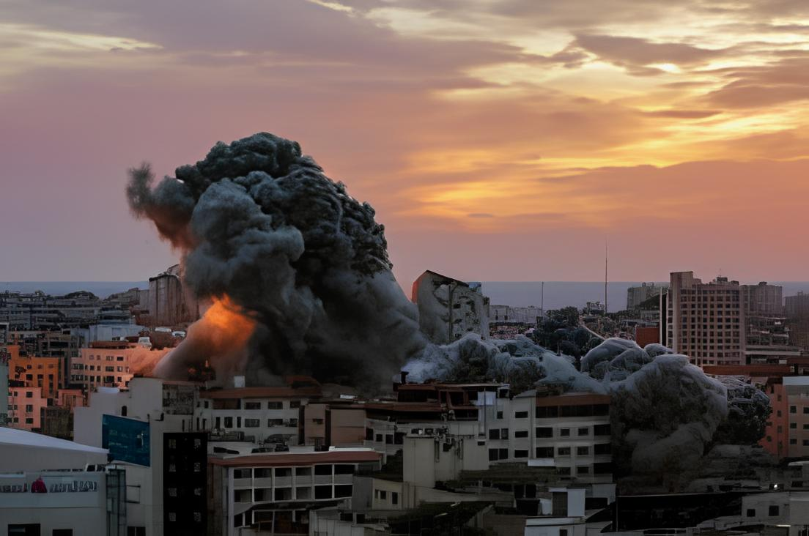
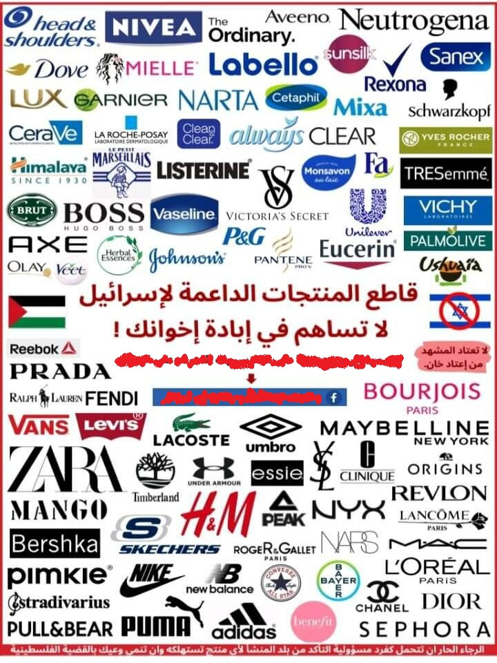

الظلم الذي يتعرض له الفلسطينيون من قبل الاحتلال الإسرائيلي هو موضوع طويل ومعقد. يشمل العديد من الأبعاد السياسية، الاقتصادية، الاجتماعية، والإنسانية، وقد وقع الفلسطينيون تحت تأثير هذا الظلم لعقود طويلة. من أبرز أوجه هذا الظلم:
1. الاحتلال العسكري: إسرائيل تسيطر على أراضٍ فلسطينية، بما في ذلك الضفة الغربية وقطاع غزة (قبل أن انسحبت إسرائيل من غزة عام 2005). الاحتلال يرافقه تفتيشات ومداهمات عسكرية، وممارسات قمعية ضد المدنيين.
2.الاستيطان: إسرائيل تشجع على بناء المستوطنات في الأراضي الفلسطينية، خاصة في الضفة الغربية. هذه المستوطنات تعد غير قانونية بموجب القانون الدولي، لكن إسرائيل تواصل توسيعها، مما يؤدي إلى مصادرة الأراضي الفلسطينية.
3.القيود على الحركة: هناك العديد من الحواجز العسكرية ونقاط التفتيش التي تقيد حرية حركة الفلسطينيين في الضفة الغربية، مما يعطل حياتهم اليومية ويفرض صعوبات كبيرة في الوصول إلى الخدمات الأساسية.
4.الحصار على قطاع غزة: إسرائيل تفرض حصاراً خانقاً على قطاع غزة منذ عام 2007، مما يسبب معاناة شديدة للسكان في ظل نقص الغذاء والدواء، بالإضافة إلى الظروف الاقتصادية الصعبة
5.العنف والاعتقالات: الفلسطينيون يتعرضون لاعتقالات جماعية وهجمات من الجيش الإسرائيلي والمستوطنين، بما في ذلك الهجمات المسلحة، وتدمير المنازل، ومصادرة الممتلكات. كما يتعرض الأطفال الفلسطينيون بشكل خاص للاعتقال والتعذيب.
6.حرمان من الحقوق الأساسية: الفلسطينيون في الأراضي المحتلة يعانون من نقص في الحقوق الأساسية مثل التعليم، الصحة، والتوظيف. بالإضافة إلى ذلك، يعانون من عدم الاعتراف بحقوقهم كمواطنين كاملين
7.التهجير القسري: هناك عمليات تهجير قسري تمارسها إسرائيل ضد الفلسطينيين، خصوصاً في القدس والضفة الغربية، حيث يتم هدم المنازل وتهجير السكان الفلسطينيين لصالح المستوطنات الإسرائيلية.
تظل القضية الفلسطينية واحدة من القضايا الرئيسية في السياسة الدولية، ويواجه الفلسطينيون صعوبات كبيرة في نضالهم للحصول على حقوقهم وتقرير مصيرهم.
تاريخ الاحتلال الإسرائيلي
الاحتلال الإسرائيلي لفلسطين هو حدث معقد مرتبط بسياقات تاريخية وسياسية طويلة، منها:
الخلفية التاريخية: كانت فلسطين جزءًا من الإمبراطورية العثمانية، وبعد انهيارها أصبحت تحت الانتداب البريطاني، مع وعود بلفور (1917) التي نصت على دعم إقامة "وطن قومي لليهود" في فلسطين.
قيام دولة إسرائيل (1948): في 14 مايو 1948، أعلن ديفيد بن غوريون قيام دولة إسرائيل بعد قرار الأمم المتحدة رقم 181 لعام 1947، الذي نص على تقسيم فلسطين إلى دولتين.
نكبة الفلسطينيين (1948): أدى قيام دولة إسرائيل إلى نزوح أكثر من 750,000 فلسطيني.
حرب 1967 (النكسة): احتلت إسرائيل قطاع غزة، والضفة الغربية، والقدس الشرقية، ومرتفعات الجولان.

أهمية مقاطعة المنتجات الداعمة وكيفية تأثيرها
مقاطعة المنتجات الداعمة تعتبر وسيلة فعالة للتعبير عن رفض سياسات أو ممارسات معينة تتبناها شركات أو دول تُتهم بدعم أنشطة معينة لا تتماشى مع القيم الأخلاقية أو السياسية لأفراد أو مجموعات من الناس. وتلعب هذه المقاطعة دورًا كبيرًا في تحفيز التغيير، حيث يمكن أن يكون لها تأثيرات متعددة على الاقتصاد والسياسة.
1.الضغط على الشركات والدول: المقاطعة تعد وسيلة فعالة للضغط على الشركات أو الدول المتورطة في دعم سياسات أو ممارسات لا أخلاقية. عندما تنخفض مبيعات المنتجات الداعمة لهذه السياسات، تجد الشركات نفسها مضطرة لإعادة النظر في مواقفها أو تغييره.
2.رفع الوعي العالمي: المقاطعة تساعد في نشر الوعي بشأن انتهاكات حقوق الإنسان التي تحدث في الأراضي الفلسطينية
3.دعم القضية الفلسطينية: من خلال تقليل الدعم المالي الذي يصل إلى إسرائيل، يتم المساهمة في الضغط السياسي والاقتصادي.
4.التأثير الاقتصادي: تقليل الطلب على المنتجات الإسرائيلية يساهم في تقليص عائدات الشركات المرتبطة بإسرائيل.
إجمالًا، تُعد المقاطعة أداة سلمية وفعالة للتعبير عن التضامن مع الشعب الفلسطيني.
فيديو توضيحي.
بعض منتوجات المقاطعة

تواصل معانا
إذا كنت ترغب في المساهمة أو المشاركة بأفكارك، او حدث خطاء في هذه الصفحة تواصل معنا عبرحسابنا على
instagram
دعاء لإخواننا في غزة
اللهم إنا نستودعك أهل غزة، اللهم احفظهم بحفظك، وانصرهم بنصرك، وارزقهم القوة والصبر على البلاء.
اللهم اجعل لهم من كل هم فرجًا ومن كل ضيق مخرجًا.